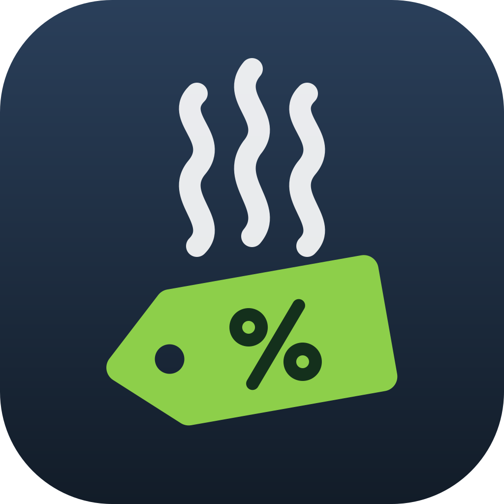
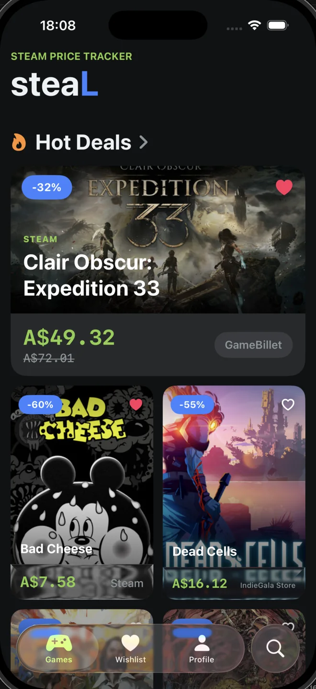
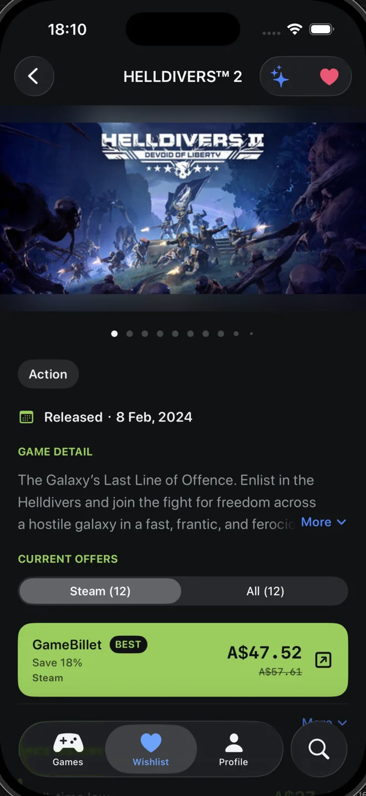
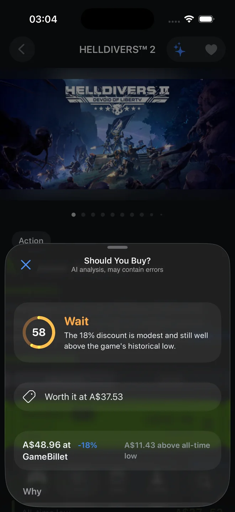
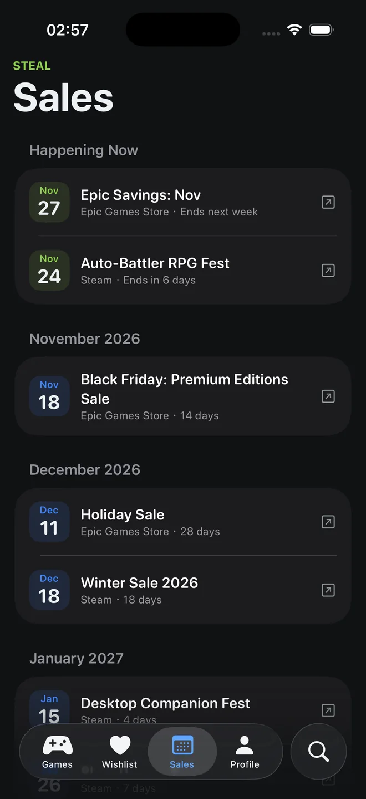
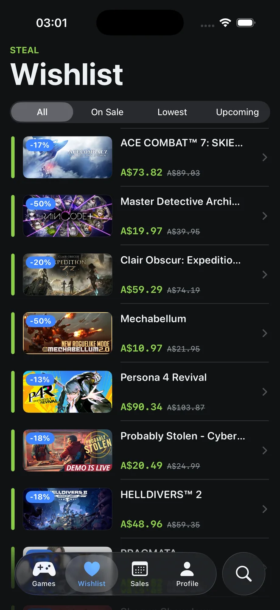
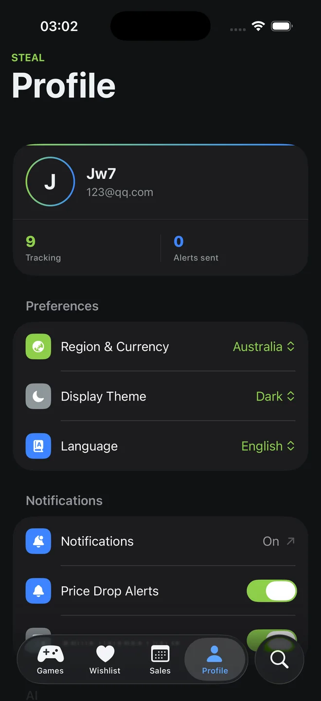

steaL
Finds Steam sales, compares prices across stores, and tells you whether to buy now or wait.帮你找 Steam 折扣、跨商店比价，判断现在买还是再等。
It started as a SwiftUI iOS app and is growing into a monorepo: a native Android app, a shared Kotlin Multiplatform module and a serverless backend on AWS.最初是一个 SwiftUI iOS 应用，现在正扩展成一个 monorepo：原生安卓应用、Kotlin Multiplatform 共享模块，以及部署在 AWS 上的 Serverless 后端。






Hot deals across stores跨商店热门折扣
Prices, history and offers for each game每款游戏的价格、史低和各商店报价
AI says buy, wait or skip, and whyAI 给出买、等还是跳过，并说明理由
Sale calendar, fed by my AWS API促销日历，数据来自我的 AWS 后端
Wishlist synced with FirebaseFirebase 实时同步的愿望单
Region, currency, theme and alerts地区、货币、主题和提醒设置
How it fits together: native UI on each platform, one shared core underneath.整体架构：各平台原生界面，底下共用一个核心。
Built已完成 In progress开发中
iOS SwiftUI, Liquid GlassBuilt已完成
- Prices, historical lows, trailers and reviews from IsThereAnyDeal and the Steam Store API; each section loads on its own so one slow request doesn't block the page.结合 IsThereAnyDeal 和 Steam Store API 展示价格、史低、预告片和评测；各区块独立加载，慢请求不阻塞整页。
- AI advice works with any OpenAI-compatible provider; the API key stays in the Keychain.AI 建议支持任意 OpenAI 兼容服务商，API Key 存在 Keychain。
- Price-drop and release notifications, Dynamic Type, VoiceOver, 7 regions, English and Chinese.降价和发售通知；支持 Dynamic Type、VoiceOver、7 个地区、中英文。
SwiftUI / SwiftData / Swift Concurrency / TipKit / SwiftLint
Android Jetpack Compose, Material 3In progress开发中
- The iOS features, rebuilt natively in Jetpack Compose and Material 3 rather than shared UI, so each platform looks and feels like itself.把 iOS 上的功能用 Jetpack Compose 和 Material 3 原生重做，而不是共用界面，让每个平台都保持自己的观感。
- First screens and theme are in place, with tab navigation on Navigation 3.初始界面和主题已完成，Navigation 3 管理 Tab 导航。
Kotlin / Jetpack Compose / Material 3 / Navigation 3 / Gradle
Shared core共享核心 Kotlin MultiplatformIn progress开发中
- The module is set up and wired to Ktor for networking and Kermit for logging.模块已经搭好，接入了 Ktor（网络）和 Kermit（日志）。
- The services are moving in here, so iOS and Android will run one implementation of the same logic while each keeps its own UI.服务层正在移进来，iOS 和安卓将共用同一份逻辑，界面仍各自原生。
Kotlin Multiplatform / Ktor / Kermit
Sale-events API促销日历后端 AWSBuilt已完成
- Collects sale dates from Steam, Epic, itch.io and GOG. An LLM extracts names and dates; code handles time zones and IDs and checks every result. A bad batch is thrown away and the last good data stays.抓取 Steam、Epic、itch.io、GOG 的促销日期：LLM 提取活动名和日期，时区和 id 由代码处理并逐条校验；校验不过就整份作废，保留上一份数据。
- GOG has no fixed source, so a tool-calling agent searches the web; every result must quote its source page, and code checks the quote is really there.GOG 没有固定数据来源，用会调用工具的 agent 自己搜索；每条结果必须带来源原文，代码核对引文确实出现在页面里。
- API Gateway, Lambda and S3, refreshed weekly by EventBridge Scheduler, all in Terraform. Only 3 files touch AWS.API Gateway → Lambda → S3，EventBridge Scheduler 每周刷新，Terraform 管理；只有 3 个文件依赖 AWS。
Python / OpenAPI 3.1 / Lambda / S3 / EventBridge Scheduler / Terraform / pytest + moto
Third-party APIs第三方服务
- IsThereAnyDeal and the Steam Store API for prices and game detailsIsThereAnyDeal 和 Steam Store API：价格和游戏详情
- Firebase Auth and Cloud Firestore for accounts and the wishlistFirebase Auth 和 Cloud Firestore：账号和愿望单
- Any OpenAI-compatible LLM for buy-or-wait advice任意 OpenAI 兼容的 LLM：购买建议